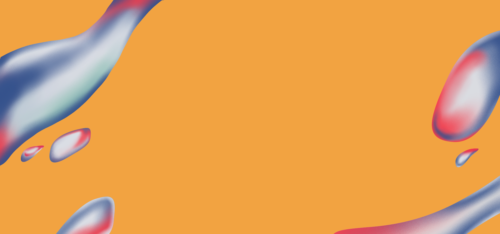
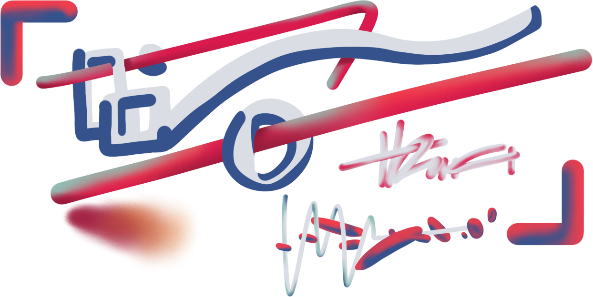
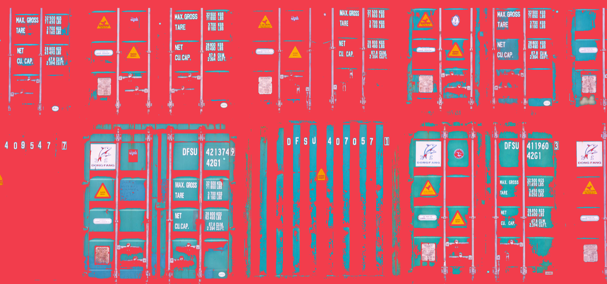
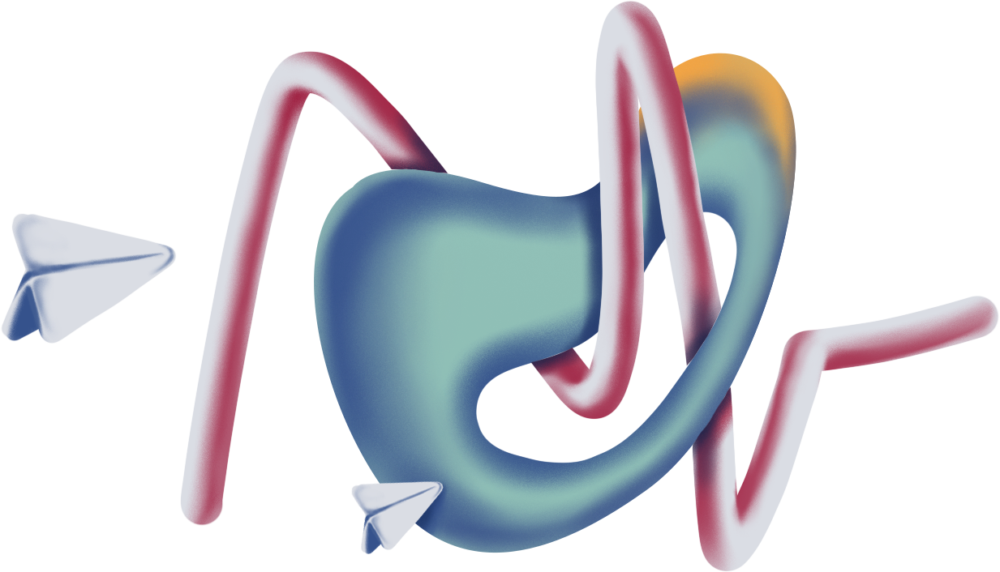
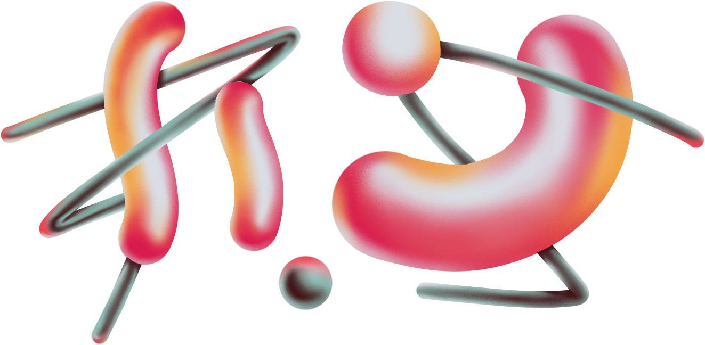
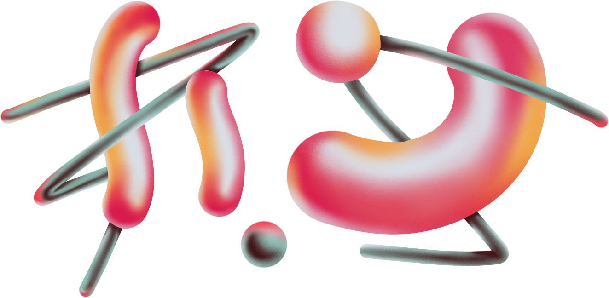

THẮNG NGUYỄN


2020
BAY
Một vệ tinh nhân tạo hay gọi ngắn gọn là vệ tinh, là bất kỳ 1 vật thể nào do con người chế tạo nên quay quanh 1 vật thể khác. Cần phân biệt với vệ tinh tự nhiên, ví dụ mọi vật thể thuộc Hệ Mặt Trời gồm cả Trái Đất, đều là vệ tinh tự nhiên của Mặt Trời; hoặc vệ tinh tự nhiên của Trái Đất là Mặt Trăng.


2020
VỆ TINH
Một vệ tinh nhân tạo hay gọi ngắn gọn là vệ tinh, là bất kỳ 1 vật thể nào do con người chế tạo nên quay quanh 1 vật thể khác. Cần phân biệt với vệ tinh tự nhiên, ví dụ mọi vật thể thuộc Hệ Mặt Trời gồm cả Trái Đất, đều là vệ tinh tự nhiên của Mặt Trời; hoặc vệ tinh tự nhiên của Trái Đất là Mặt Trăng.
 

2020
TAM VƯƠNG
Về mặt nghĩa, "Vua" là người đứng đầu tối cao, thực tế hoặc biểu tượng, của một chính quyền; trực tiếp hoặc gián tiếp có danh dự, quyền cai trị, cầm quyền ở một quốc gia. Thường thì các Vua được kế tục bởi hình thức truyền ngôi. Và tùy vào chế độ quân chủ cụ thể mà các vị Vua của từng quốc gia có những tước hiệu khác nhau, điển hình nhất là Hoàng đế và Quốc vương.